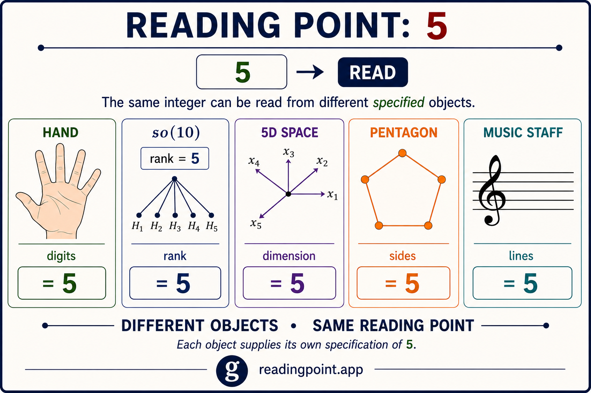
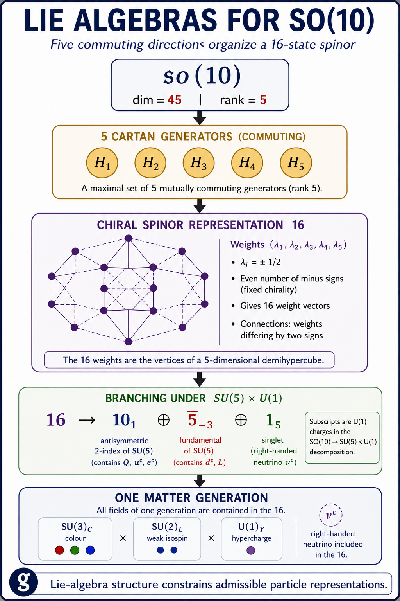

Reading Point
Modulo 30
Enter an integer to read its residue modulo 30 and determine whether it occupies one of the eight residue classes coprime to 30.
137 mod 30 = 17
Reduced residue class modulo 30
137 occupies residue class 17, which is coprime to 30.
Application
Reading Point: +5
The same integer can be read from different specified objects. Each object supplies its own specification of 5.

A reading point does not claim that a hand, a Lie algebra, a geometric space, a polygon, and a music staff are the same object. Their specifications remain distinct.
What they share here is a readable value: 5.
Arithmetic reading
+5 constraint
Every prime \(p>5\) resists division by \(2\), \(3\), and \(5\). Therefore its residue modulo 30 must occupy one of eight classes:
30 positions → 8 candidate reading points.
Divisibility by \(2\), \(3\), and \(5\) removes the other 22 residue positions. Occupying one of the eight remaining classes is necessary for a prime greater than 5, but it does not by itself establish primality.
One specification of 5
SO(10): rank 5
In \(\mathfrak{so}(10)\), the reading point 5 has a precise algebraic specification: rank.

The rank of \(\mathfrak{so}(10)\) is 5, corresponding to a maximal set of five mutually commuting Cartan generators. Those five commuting directions label the weights of the 16-dimensional chiral spinor representation.
The example deepens the reading without changing the rule: 5 is specified by the object being read. Here the specification is Lie-algebra rank, rather than digits, geometric dimension, polygon sides, or staff lines.